概要 (Overview)
FOMA 端末は、当時の日本国内向け第3世代携帯電話規格に準拠した端末群である。搭載プロセッサは主に Texas Instruments OMAP 系列（ARM9 / ARM11）とルネサス SH-Mobile 系列（SuperH + 一部 ARM 共存）に二分される。QEMU の実用的なエミュレーション対象となるのは ARM コアを持つ機種に限られ、純 SuperH 構成は現時点の upstream では実質的に再現不能である。
FOMA handsets of this era fall into two principal SoC families: TI OMAP (ARMv5 / ARMv6) and Renesas SH-Mobile (SuperH, occasionally dual-core with ARM). Only the ARM cores possess practical upstream QEMU coverage; pure SuperH designs remain unsupported.
-M virt およびレガシー ARM ボード）に対する命令セット一致度と、現実的なユーザーランド起動可能性を基準とする。SuperH のみの構成は常に Poor と判定する。
端末グループ別 SoC / アーキテクチャ / QEMU 適合度一覧
下表は、代表的な FOMA 端末グループについて、SoC 名、命令セット、および QEMU 適合度を整理したものである。適合度の判定根拠は後続の凡例に示す。
The matrix below lists representative FOMA model groups, their SoCs, ISAs, and QEMU fitness ratings. Rating criteria appear in the legend that follows.
| 端末グループ (Model Group) | SoC / CPU | アーキテクチャ (Architecture) | QEMU 適合度 |
|---|---|---|---|
| Fujitsu F900i / F900iT | TI OMAP (161x) | ARM9 (ARMv5) | Good (arm926) |
| Fujitsu F901iC | SH-Mobile3 | SuperH SH-3 | Poor (no SH) |
| Fujitsu F902i | SH-Mobile | SuperH | Poor |
| Fujitsu F903i | SH-Mobile G1 | SuperH + ARM | Medium (arm1136) |
| Fujitsu F905i | SH-Mobile G2 | ARM1136 + SHX2 | Good (arm1136) |
| NEC N900i / N901iC | TI OMAP1610 | ARM9 (ARMv5) | Good (arm926) |
| NEC N902i | TI OMAP | ARM9 | Good |
| NEC N903i | TI OMAP2430 | ARM1136 (ARMv6) | Excellent (arm1136) |
| Panasonic P900i–P903i | TI OMAP (shared) | ARM9 / ARM11 | Good–Excellent |
| Sharp SH900i | TI OMAP1610 | ARM9 | Good (arm926) |
| Sharp SH903i | TI OMAP2430 | ARM1136 | Excellent |
| Sharp SH903iTV / SH905i / SH-01A | SH-Mobile G1/G2/G3 | ARM1136 + SuperH | Good (arm1136) |
| 905SH / 911SH | Proprietary multimedia | Mixed | Medium |
| Raku-Raku F880iES / F883i / F884i | SH-Mobile G1 | ARM + SuperH | Medium–Good |
| Raku-Raku F-01A | SH-Mobile G series | ARM1136 + SuperH | Good (arm1136) |
適合度判定基準 (Fitness Legend)
-M virt -cpu arm1136 と高い命令セット一致を示し、実用的なユーザーランド起動が期待できる。
Close match with upstream
arm1136; practical userland boot feasible.
arm926 または arm1136 で利用可能。周辺チップセットの完全再現は不要な場合に適する。
Usable with
arm926 or arm1136; peripheral fidelity secondary.
ARM core usable; SuperH companion core unsupported.
Pure SuperH → no practical upstream QEMU support.
技術的補足 (Technical Notes)
ARM9 (ARMv5) 系統： OMAP1610 / 161x 系は QEMU の arm926 モデルで概ね再現可能である。キャッシュ・MMU 挙動は近似であり、厳密なサイクル正確性は保証されない。
ARM9 (ARMv5) devices map acceptably to QEMU’s arm926. Cache and MMU behaviour are approximate; cycle-accurate timing is not claimed.
ARM1136 (ARMv6) 系統： OMAP2430 および SH-Mobile G2/G3 の ARM コアは -cpu arm1136 との親和性が高い。B-System の AArch32 テストターゲットとして有用である。
ARM1136 (ARMv6) cores (OMAP2430, SH-Mobile G2/G3 ARM side) align well with -cpu arm1136 and serve as useful AArch32 test targets for B-System.
SuperH の制限： QEMU には歴史的に SuperH サポートが存在するが、SH-Mobile 特有の周辺装置（LCDC、キーマトリクス、FOMA モデム）は実装されておらず、実用的な FOMA 端末エミュレーションには至らない。
Although QEMU retains residual SuperH code, SH-Mobile-specific peripherals (LCDC, key matrix, FOMA modem) remain unimplemented; pure SuperH FOMA handsets are therefore rated Poor.
µBTRON-FOMA モバイル UI 画面ギャラリー (Mobile UI Showcase)
以下の画面は、実機描画エンジン（C99 Headless Framebuffer Compositor）によりピクセル単位で正確に生成された µBTRON-FOMA の画面群である。480×640 VGA 縦画面（Portrait）、5方向キーによるフォーカス遷移、3ソフトキー操作体系、および実身・仮身（Fusen）ハイパーメディアモデルを忠実に再現している。
The screenshots below are natively rendered from the C99 framebuffer compositor for µBTRON-FOMA on a 480×640 VGA vertical viewport. They demonstrate keypad-driven focus navigation, context-sensitive soft keys, and the authentic Real Body / Virtual Body (実身・仮身) hypermedia environment.
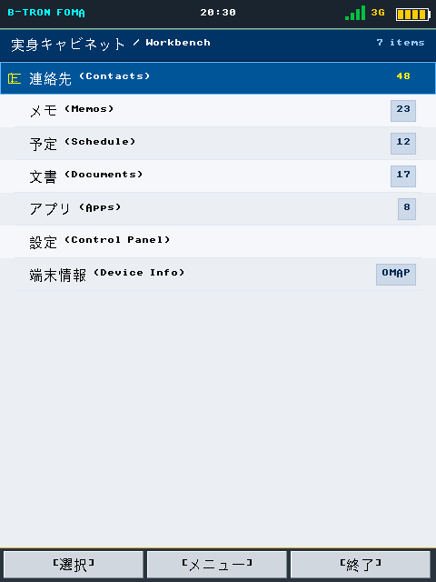
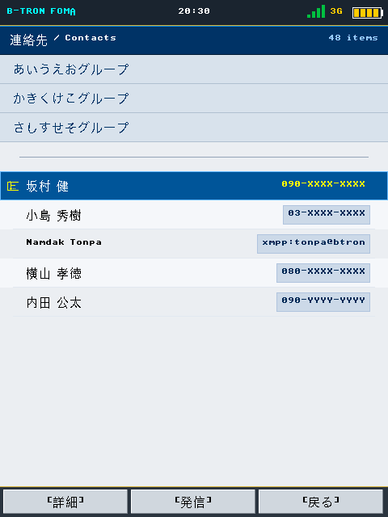
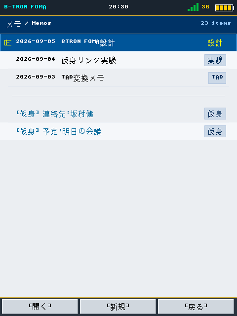
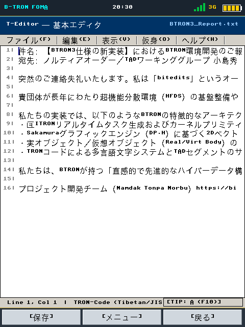
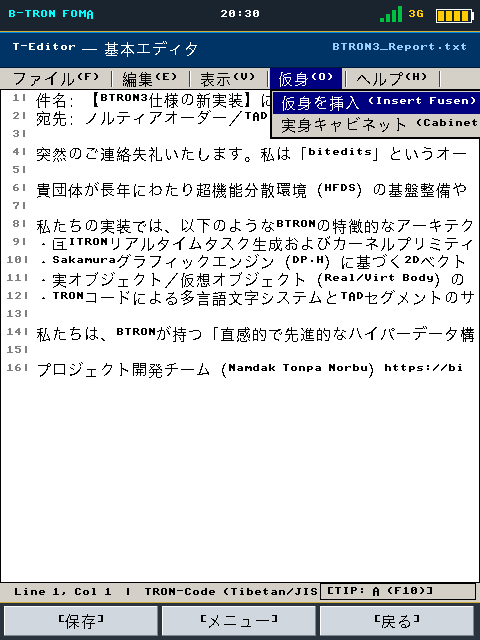
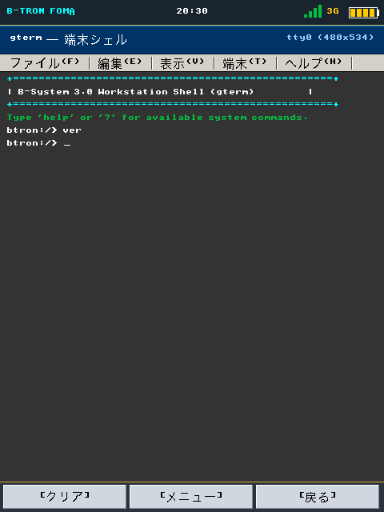
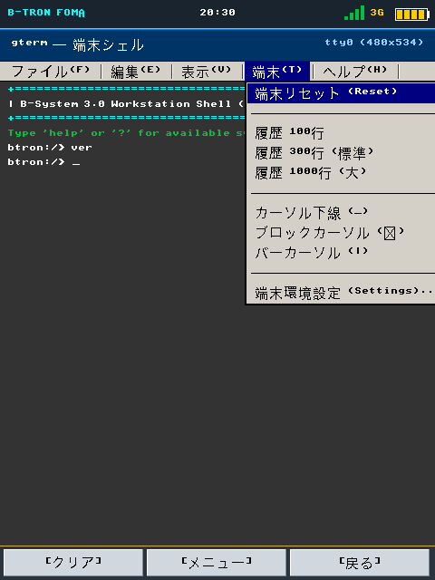
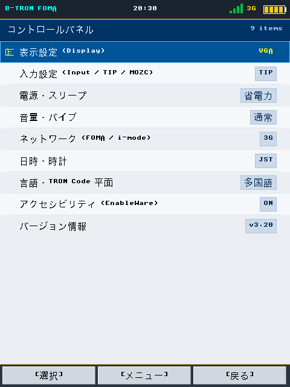
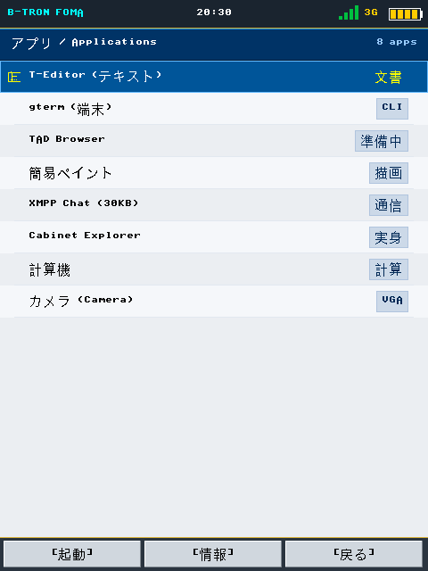
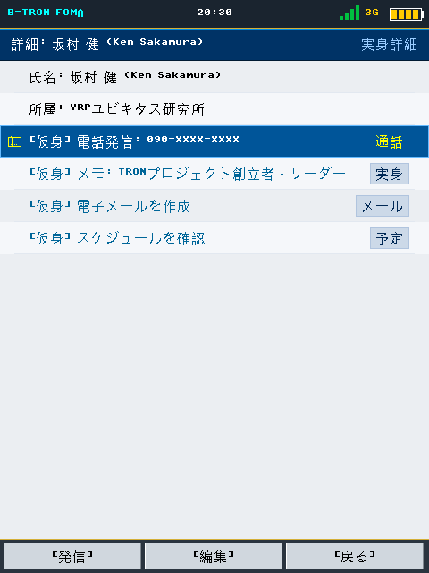
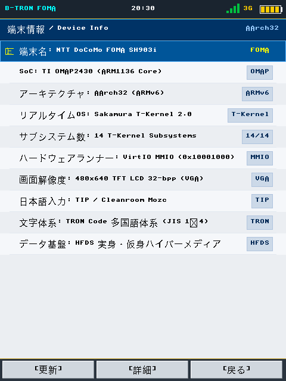
開いたダイアログ・操作メニュー画面 (Opened Dialogs & Context Menus)
B-TRON / 超漢字の HMI 設計指針に準拠した、モーダルダイアログ・警告ボックス・属性シート・TIP（テキスト入力プロセッサ）・電源管理・着信通知等の OS 構成要素の実動画面。
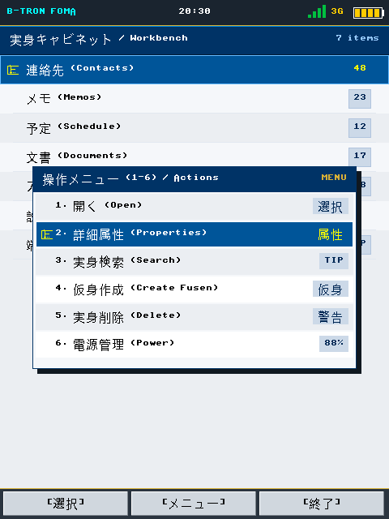
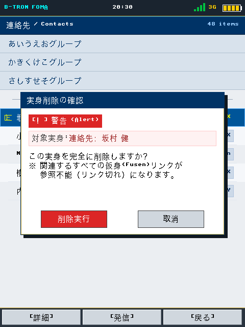
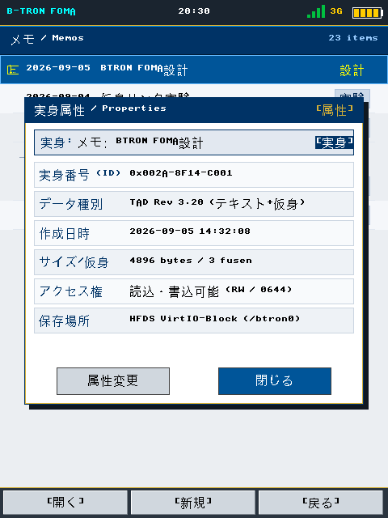
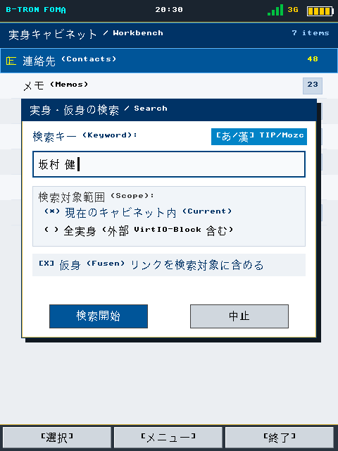
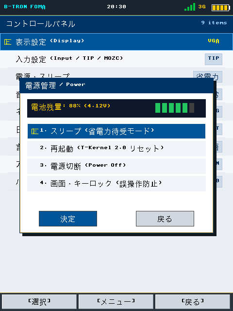
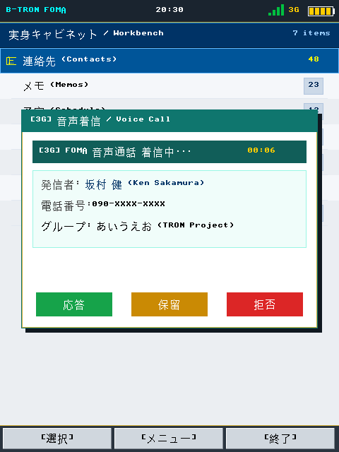
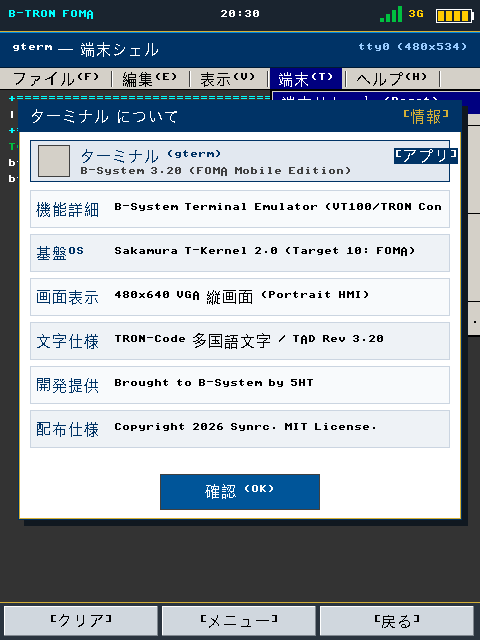
B-System マルチアーキテクチャ検証との関係
B-System は既に Raspberry Pi 2B/3B/4B（ARM）、x86_64 UEFI、NEC PC-98、MIPS などのターゲットを単一コードベースでサポートしている。本 FOMA 適合性表は、将来的にモバイル系 ARMv5/v6 ターゲットを追加する際の参照資料として位置付けられる。SuperH 純正構成は現状スコープ外とする。
B-System already unifies Raspberry Pi (ARM), x86_64 UEFI, NEC PC-98 and MIPS targets under a single tree. This FOMA matrix supplies reference data should mobile ARMv5/v6 targets be added; pure SuperH configurations remain outside current scope.